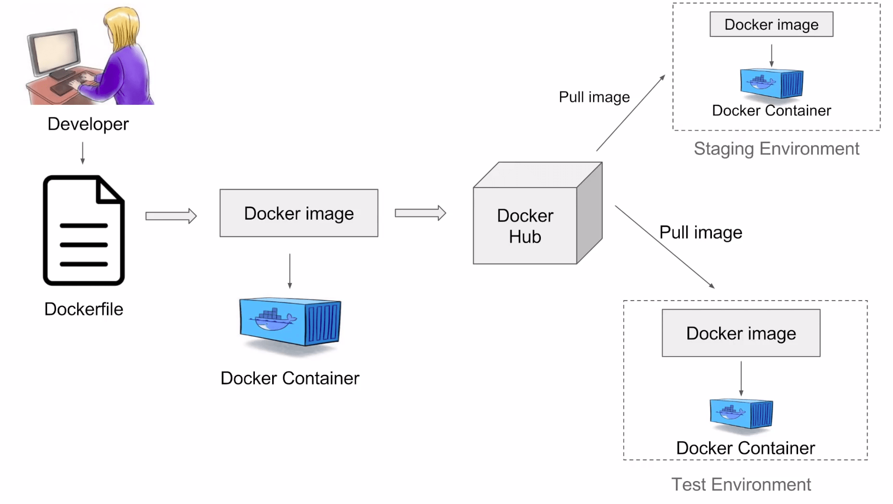
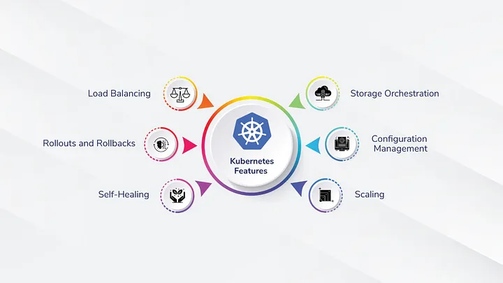

Containers on Clouds
Giorgos Damaskos
presentation in repo:
https://github.com/centrefordigitalhumanities/cdh-presentations/

Outline
- Why Containers?
- Containerized Workflow
- Why Kubernetes?
- What is Kubernetes?
- Basic objects
- Case study: knowledge-base
- Freestyle Discussion
- Extras?
Why Containers?
Over the years, people called developers started{kind=link}
virtualizing and containerizing applications (separation of concerns)

Containerized Workflow
"It works on my machine""Then we will ship your machine to the customer"


Containers made it easy to seperate applications but managing hundreds of containers was cumbersome... Kubernetes to the rescue!
image: https://k21academy.com/docker-kubernetes/docker-and-kubernetes/
Kubernetes features
After a container image is pushed into a registry,
Kubernetes gets into the scene.

What is Kubernetes?
Kubernetes is a distributed container orchestration platform
for automating deployment and management of applications at scale.
- Open Source
- Distributed
- Extensible
- Declarative
- Resilient
image: https://tudip.com/blog-post/managing-deployments-using-kubernetes-engine/
What is Kubernetes??
Kubernetes is the "linux kernel" of distributed systems.
*
It abstracts away the underlying infrastructure and provides a uniform interface for applications to be both deployed and consume the shared pool of resources.
*
Kubernetes runs in nodes: on cloud or on premises or on a combination.
Basic Objects
Pod: the smallest computational unit, plugs&plays container(s), ephemeral in nature
*
Deployment: manages the lifecycle of identical pods by scaling, updating, self-healing
*
ConfigMap/Secret: holds data as key-value pairs, passwords and apikeys kept secret
*
Service: provides a stable IP address and domain name for reaching a deployment
Case study: knowledge-base
- python mkdocs static website
- run/serve locally
- containerize
- build pipeline
- deploy to openshift